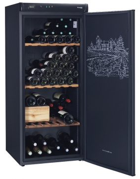
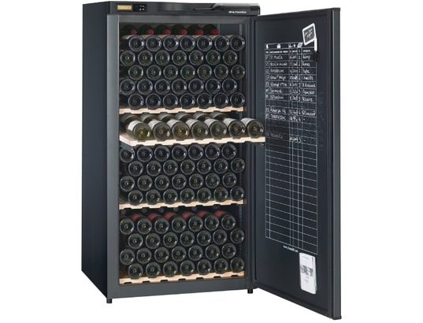
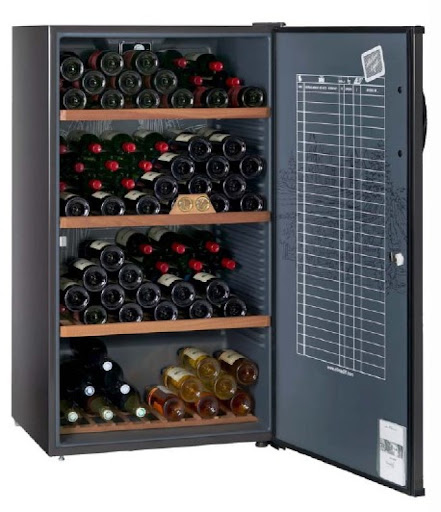

| AV 175 | Pratique, le thermomètre en façade et le nouveau registre de cave International pour tenir à la craie la gestion des bouteilles présentes. Confortable les clayettes collector réversibles à empreintes en bois massif. | ||||
|  | Contenance | Système froid | Dimensions (hxlxp) | Porte | |
| 178 (en 75cl) | Compresseur | 144 x 62 x 67 | Porte | ||
| Accessoires : 2 Clayettes réversibles et 1 Modulable (en option payante). Régulation électromécanique, Afficheur Digital de température | Noir | ||||
| AV 205 | Astucieux, sa lampe de lecture pour lire les etiquettes dans un environnement obscur. | |||
|  | Contenance | Système froid | Dimensions (hxlxp) | Porte |
| 196 (en 75cl) | Compresseur | 139 x 70 x 68 | Porte | |
| Accessoires : Serrure à clé, 1 Clayette coulissante (possible de supplémentaire en option payante), Régulation électroniquer, Dynamique Data Dispaly | Noir | |||
| CV 183 | Elégante, la poignée de porte en bois profilé. | |||
|  | Contenance | Système froid | Dimensions (hxlxp) | Porte |
| 170 (en 75cl) | Compresseur | 125 x 70 x 67 | Pleine | |
| Accessoires : Serrure à clé, Clayettes bois | Brun foncé | |||